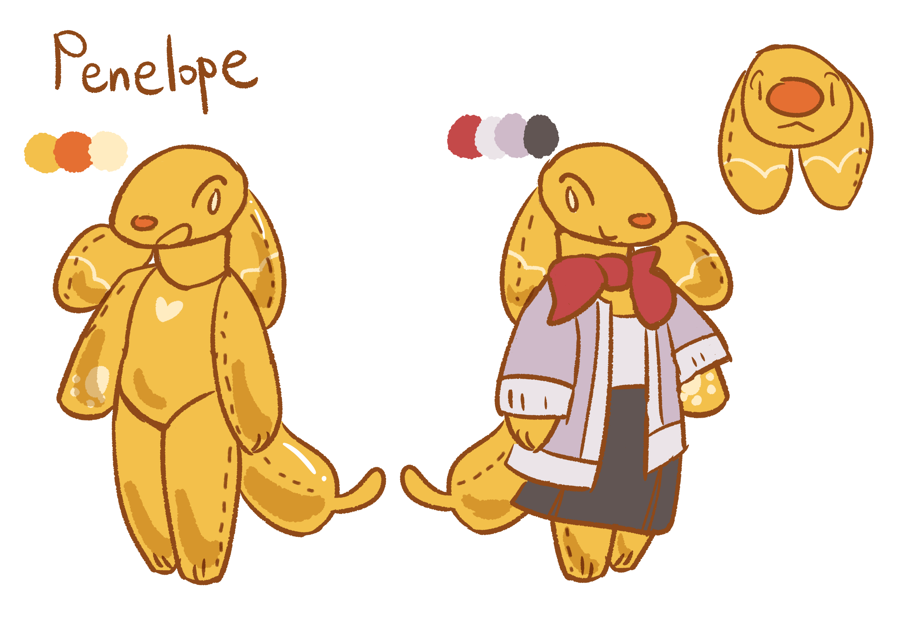

I want to make our home a better place, that's all!

Lore facts:
- Her appearance is based off a balloon dog, however, she won't pop since she is just a doll
- However, her fear of sharp objects is still present
- She sometimes wishes she could enter the universe, she worries what dangers lurks there though
- She is very kind and patient compared to the other dolls in this place